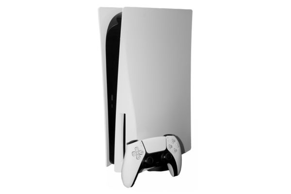
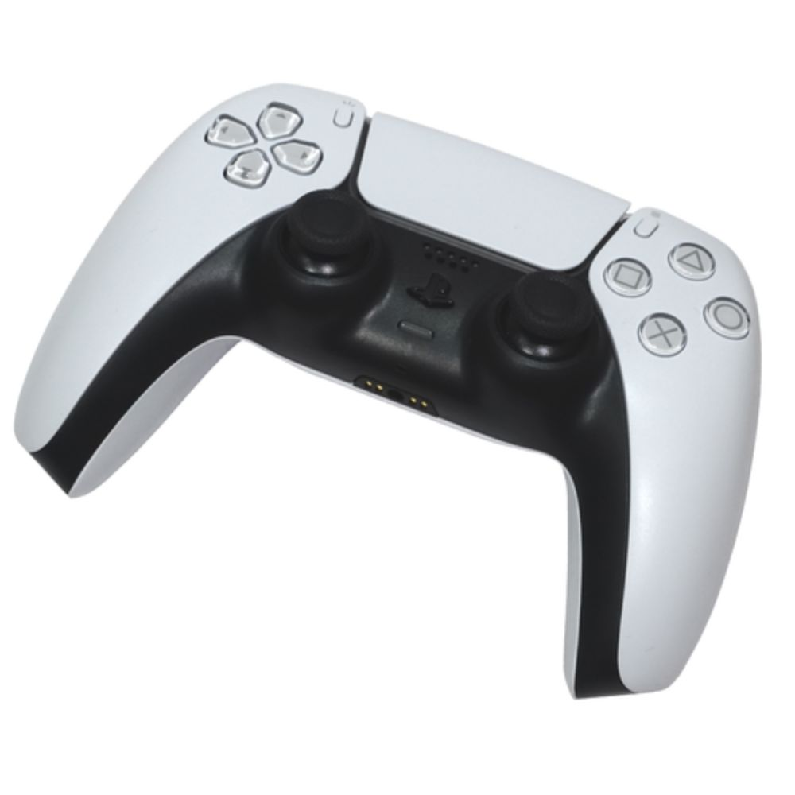
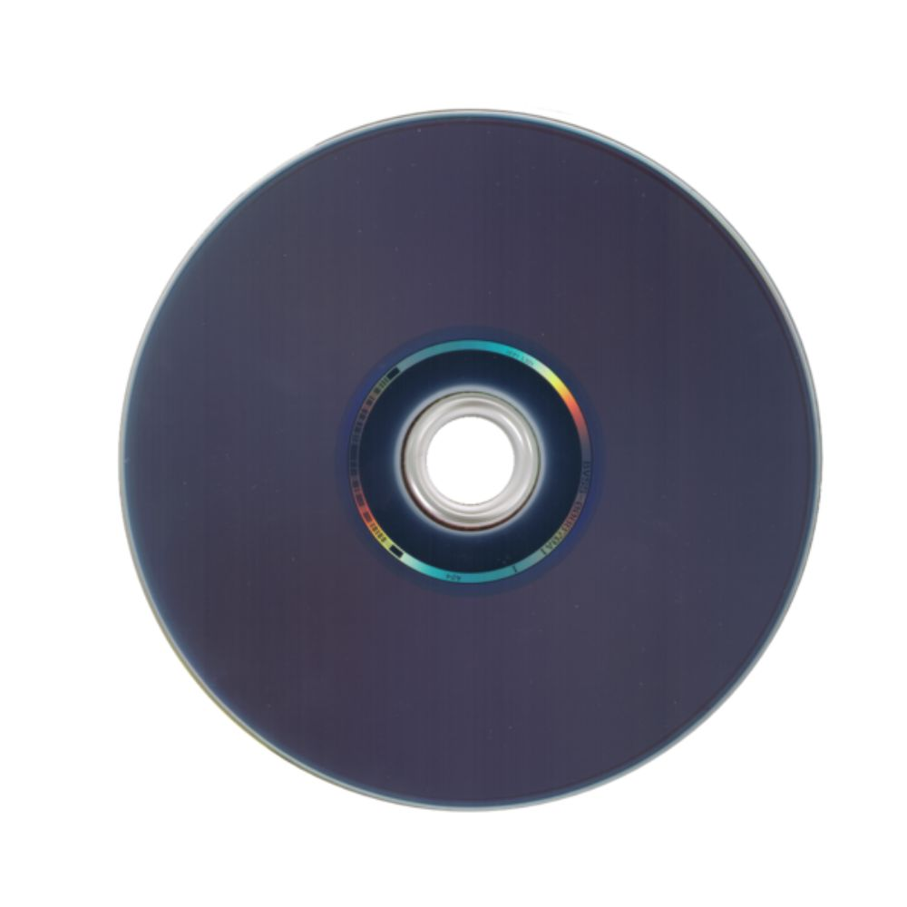

PlayStation 5

O PlayStation 5 (oficialmente abreviada como PS5) é um console de jogos eletrônicos de nona geração, desenvolvido pela Sony Interactive Entertainment. Foi anunciado em outubro de 2018 e confirmado em outubro de 2019 como o quinto da série PlayStation e sucessor do PlayStation 4. O console foi lançado em 12 de novembro de 2020 na América do Norte, Austrália, Coreia do Sul, Japão, Nova Zelândia e Singapura. E em 11 de dezembro de 2020 foi lançado nas Filipinas. 19 de novembro para o resto do mundo. A plataforma foi lançada em duas versões, um sistema com entrada para disco óptico compatível com Blu-ray Ultra HD para suporte a jogos lançados em mídia física ou baixados através da PlayStation Store e uma versão digital de menor custo sem a unidade de disco, utilizando apenas o download digital, embora pode ser adquirido separadamente em sua revisão de hardware em 2023. Um modelo com hardware aprimorado chamado PlayStation 5 Pro foi lançado em 7 de novembro de 2024, apresentando uma GPU mais rápida, ray tracing aprimorado e tecnologia de upscaling baseada em AI.
O PlayStation 5 possui uma unidade de estado sólido personalizada projetada para a leitura de dados de alta velocidade para permitir melhorias significativas no desempenho gráfico. O hardware também possui uma GPU AMD personalizada capaz de fornecer suporte a Ray-tracing, displays de resolução 4K e até 120 quadros por segundo, um novo hardware de áudio para efeitos de áudio 3D em tempo real e retrocompatibilidade com a maioria dos jogos do PlayStation 4 e PlayStation VR.
História
As primeiras notícias e informações oficiais sobre o PlayStation 5 vieram do arquiteto principal Mark Cerny, em entrevista à revista Wired em abril de 2019. No início de 2019, o relatório financeiro da Sony para o trimestre encerrado em 31 de março de 2019, afirmou que o novo hardware de próxima geração estava em desenvolvimento, mas não seria lançado antes de abril de 2020. Em uma segunda entrevista à revista Wired em outubro de 2019, a Sony disse que pretende lançar seu console de próxima geração em todo o mundo até o final de 2020. As especificações de hardware atuais foram lançadas em outubro de 2019. Na CES 2020, a Sony apresentou o logotipo oficial da plataforma, que segue o estilo minimalista semelhante dos consoles anteriores da marca PlayStation. As especificações completas do console foram fornecidas em uma apresentação on-line de Cerny e publicadas pela Sony e Digital Foundry em 18 de março de 2020. A Digital Foundry conversou com Cerny em detalhes e publicou um "mergulho profundo" na arquitetura interna do console em 2 de abril.
Um grande evento digital focado na biblioteca de jogos do PlayStation 5 havia sido planejado para 4 de junho de 2020, mas foi adiado e ocorreu em 11 de junho devido aos protestos de George Floyd. Além dos jogos, o visual do console também foi revelado nesse evento.
Controles
O controle sem fio DualSense do PlayStation 5 foi revelado em 7 de abril de 2020. O DualSense é baseado nos controles DualShock, mas com modificações influenciadas por discussões com designers e jogadores. O DualSense possui gatilhos adaptáveis que podem alterar a resistência ao jogador conforme necessário, suportando uma experiência como virtualmente atirar uma flecha de um arco. O DualSense possui forte feedback háptico por meio de atuadores de bobina de voz, que, juntamente com um alto-falante aprimorado no controle, pretendem fornecer um melhor feedback no jogo. Enquanto o DualSense mantém a maioria dos mesmos botões que o DualShock 4, o botão "Compartilhar" foi renomeado para "Criar" com outros meios para que os jogadores compartilhem e criem conteúdo com outros. Uma nova matriz de microfone embutida foi adicionada para que os jogadores possam falar com outras pessoas usando apenas o controle. Ele possui uma coloração bicolor, principalmente branca com uma face preta. A barra de luz foi movida para os lados do touchpad. Possui conectividade USB-C, uma bateria com duração mais alta e uma tomada de áudio.

Jogos
Cada unidade do PlayStation 5 vem pré-instalada com Astro's Playroom, um jogo projetado para servir como uma demonstração do controle DualSense. Os jogos do PlayStation 5 não usam nenhum bloqueio de região, permitindo que os jogadores joguem jogos cujo lançamento pode ser limitado em uma região diferente.
A Sony anunciou a responsabilidade simultânea de apoiar a comunidade do PlayStation 4 e abraçar o PlayStation 5 como um grande avanço tecnológico. Em uma entrevista para GamesIndustry.biz, Ryan afirmou:
"Sempre dissemos que acreditamos em gerações. Acreditamos que quando você se dá ao trabalho de criar um console de última geração, ele deve incluir recursos e benefícios que a geração anterior não inclui. E que, em nossa opinião, as pessoas deveriam fazer jogos que possam tirar o máximo proveito desses recursos."Discutindo sobre as capacidades do controle DualSense com Geoff Keighley, o gerente geral Eric Lempel afirmou que a Sony
quer evoluir cada parte da experiência, mas para que isso aconteça
não podemos levar todos conosco de consoles anteriores para [uma experiência de próxima geração]. Você precisa de um novo hardware, de novos dispositivos para experimentar o que esses desenvolvedores desejam que você experimente.Ratchet & Clank: Rift Apart foi destacado como um jogo de próxima geração que não é tecnicamente possível em um hardware mais antigo. Lempel garantiu a Keighley que o interesse no PlayStation 4 não terminará abruptamente, com mais jogos estando por vir.
Em 12 de setembro de 2020, Jim Ryan anunciou que Spider-Man: Miles Morales, Sackboy: A Big Adventure e Horizon Forbidden West serão lançados para o PlayStation 4, além das versões previamente confirmadas para PlayStation 5. A crença da Sony nas gerações foi amplamente interpretada como uma mudança que definiu a era para os jogos apenas para PS5, que exploram totalmente as capacidades aprimoradas do console, em vez de lançar jogos de geração cruzada para os dois consoles do PlayStation. Ryan disse que ninguém deve ficar desapontado, pois as versões de PS5 tirarão vantagem do conjunto de recursos avançados do console e que as versões de PS4 podem ser atualizadas gratuitamente. A Sony oferece suporte a qualquer editor que deseja oferecer versões aprimoradas de jogos de PS4 sem custo adicional. A Electronic Arts afirmou que seus jogos de PS4, como FIFA 21 e Madden NFL 21, incluirão uma atualização gratuita para a versão de PlayStation 5, se os usuários atualizarem antes do lançamento sucessivo. A Bungie também disse que Destiny 2 pode ser atualizado para a versão de PS5 sem nenhum custo adicional, e a CD Projekt RED também oferece isso para Cyberpunk 2077 e The Witcher 3: Wild Hunt.
A Eurogamer informou que o programa de certificação da Sony em maio de 2020 exigia que os jogos de PS4, submetidos à certificação após 13 de julho de 2020, fossem nativamente compatíveis com o PlayStation 5.

SILENT HILL FGameplay- demonstração do jogo.
Especificações
| CPU | GPU | ||
|---|---|---|---|
| Fabricante / Modelo: | AMD Ryzen “Zen 2” – 8 núcleos / 16 threads, até ~3,5 GHz | Arquitetura gráfica: | AMD RDNA 2, até ~2,23 GHz (~10,3 TFLOPS) |
| Memória de sistema: | 16 GB GDDR6, largura de banda ~448 GB/s | Armazenamento interno: | SSD custom de 825 GB (ou variantes) |
| Ray Tracing / Outras: | Ray tracing dedicado, suporte até 8K/120Hz vídeo | ||
| Áudio | Mídia | ||
| Áudio 3D “Tempest”: | Sim (centenas de fontes simultâneas) | Formato: | Ultra HD Blu-ray / Digital Edition disponível |
| Capacidade: | até ~100 GB por disco (ex: 100GB Ultra HD Blu-ray) | ||
| Memória / Outros | |||
| RAM principal: | 16 GB GDDR6 | Dimensões (aprox): | ≈ 358×80×216 mm / peso ≈ 2,6-3,2 kg para modelos revisados |
| Interface / Expansão: | Slot NVMe SSD, USB, HDMI 2.1, etc. | ||